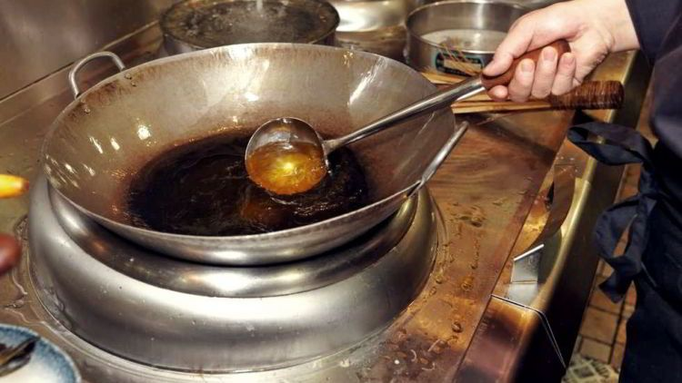
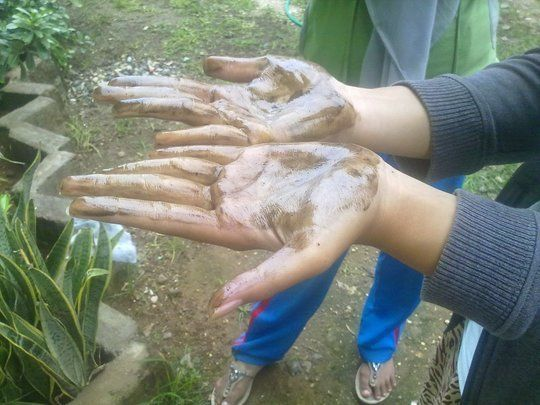
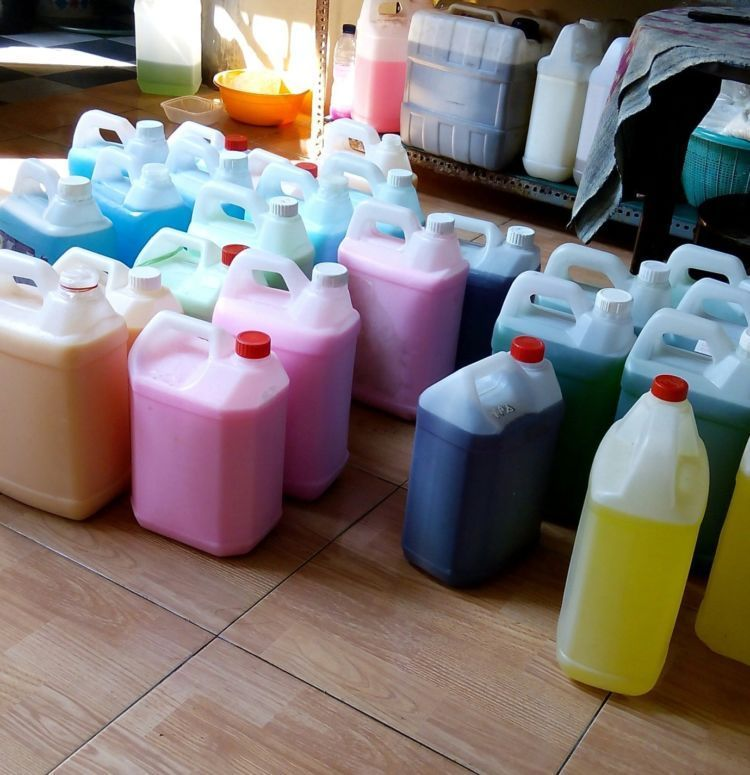
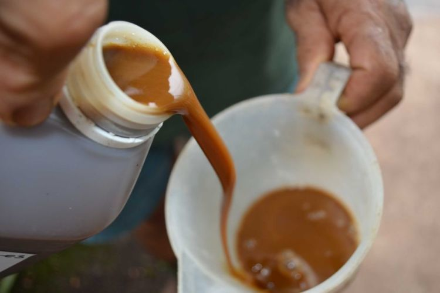
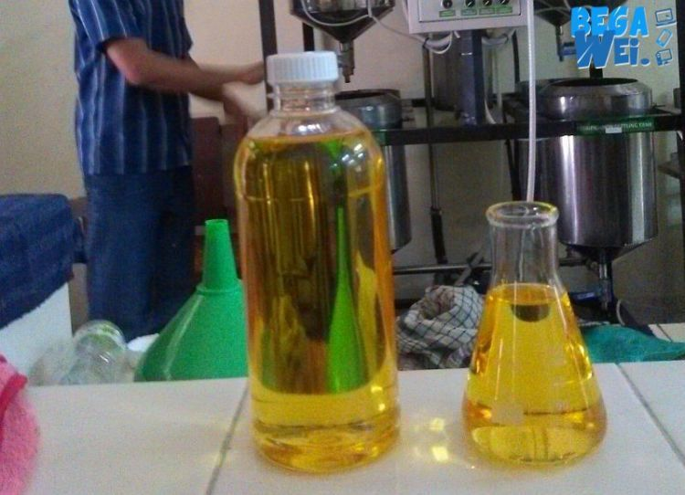
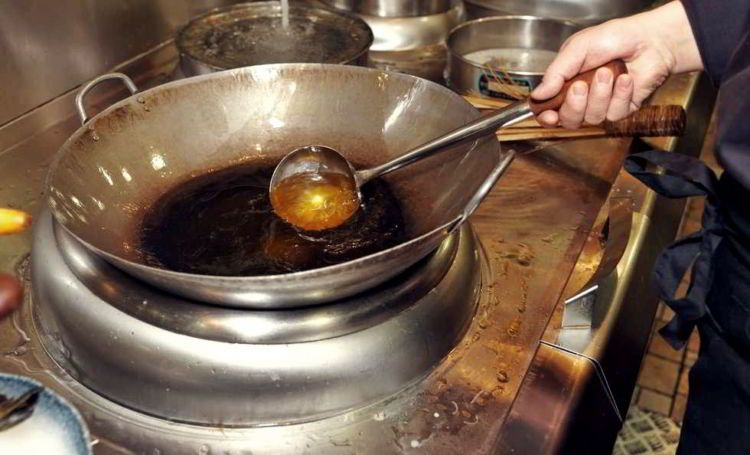

Minyak Jelantah Jangan Buru-buru Dibuang, 6 Kegunaannya Ini Bikin Kamu Tercengang
Sehabis menggoreng, biasanya minyak yang telah dipakai bakal kamu buang. Hal ini karena minyak goreng yang dipakai berkali-kali berbahaya buat kesehatan. Makanya, kamu pilih untuk nggak pakai lagi lalu membuangnya.
Oleh karena itu, coba simak yuk ulasan Busep Tips berikut tentang minyak jelantah berikut ini. Nggak cuma bisa jadi bahan bakar saja, tapi minyak jelantah ternyata bisa juga lho dijadikan sabun cair. Nggak percaya? Langsung saja yuk simak ulasannya!
1. Dengan dicampur bahan tertentu, minyak jelantah bisa dimanfaatkan sebagai sabun cair. Gini nih penjelasannya…
Supaya bisa jadi sabun cair, Rionugroho membuatnya dengan mencampurkan minyak jelantah dan kalium hidroksida yang dipanaskan hingga 110 derajat celsius selama satu jam sebagai proses saponifikasi. Proses saponifikasi ini bakal menghasilkan sabun cair dan gliserol.
Kalium hidroksida sendiri didapatkan dari abu kulit buah kapuk randu yang memang mengandung senyawa kalium karbonat 78,95 persen, lalu diekstraksi jadi soda kue dan telah dilarutkan, maka jadilah kalium hidroksida.
2. Nggak cuma sabun cair, cairan pembersih lantai pun bisa dibuat dengan minyak jelantah
Bukan cuma sabun cair mandi atau cuci tangan saja, tapi minyak jelantah bisa juga digunakan sebagai sabun pembersih lantai. Yup! Hal ini pernah dicoba oleh Tim Program Kreativitas Mahasiswa Kewirausahaan Universitas Negeri Yogyakarta (UNY) yang menamai eksperimennya ini sebagai “Karbol Milan".
Cara membuatnya :
- minyak jelantah dijernihkan dahulu
- membuat caira karbolnya
- setelah semuanya siap, lalu produknya dikemas.
Sabun pembersih lantai ini mereka bagi ke dalam berbagai aroma, antara lain jeruk nipis, apel, melati, dan bougenvil. Kata mereka, sayang minyak jelantah langsung dibuang, karena merupakan jenis limbah yang dapat mencemari lingkungan yang nggak bisa larut dalam air yang bersifat polar. Imbasnya, polusi air lah yang akan terjadi.
3. Sebagai bahan bakar lampu, minyak jelantah juga bisa menerangi setiap sudut di rumahmu
Buat kamu yang tempat tinggalnya sering mati lampu, perlu manfaatkan nih minyak jelantah sebagai bahan bakar lampu minyak. Tanpa ribet, kamu udah bisa menyalakan lampu minyak dengan minyak jelantah sebagai bahan bakarnya.
Caranya yaitu, kamu sediakan dulu wadah yang nggak mudah bocor atau terbakar saat terkena api (misalnya kaleng biskuit), lalu tuangkan minyak jelantah ke dalamnya. Lalu ambil segumpalan kapas yang telah dipadatkan, lalu taruh di tengah-tengah tutup kaleng biskuitnya. Kamu perlu menunggu dulu sampai minyaknya meresap membasahi seluruh bagian kapas. Terakhir, tinggal bakar deh kapasnya menggunakan korek api.
4. Hobi pelihara tanaman? Minyak jelantah bisa lho dijadikan pupuk penyubur andalan!
Seorang pakar hortikultura dari Tropiculture Australia telah bernama Chris Nathaniel mengatakan, butuh 10 tahun membuat pupuk karbon dari minyak bekas ini. Dia pilih minyak goreng yang telah dipakai untuk menggoreng ikan dan keripik kentang, yakni biasa dipakai untuk pupuk buah-buahan dan sayur-sayuran.
Cara memakai pupuk karbon ini cukup dengan menyemprotkan ke bagian daunnya sekitar 15 ml per liter air. Tapi, kamu dilarang semprotkan terlalu sering karena minyak jelantahnya dapat menutupi seluruh pori-pori pernapasan yang ada pada daun.
5. Sudah jadi rahasia umum kalau minyak jelantah bisa digunakan buat bahan bakar biodiesel. Buat sebatas pengetahuan saja
Hal ini dikemukakan oleh para mahasiswa dari Universitas Islam Indonesia (UII) Yogyakarta. Mereka menemukan metode yang tepat untuk memanfaatkan transesterifikasi buat mengkonversi minyak jelantah. Proses ini dilakukan dengan beri aliran listrik ke dalam larutan minyak jelantah dengan variasi waktu tertentu. Elektroda atau batang logam yang digunakan untuk mengaliri listrik titu elah dilumuri dengan larutan khusus yang disebut kitosan gel.
Reaksi transesterifikasi sendiri selama elektrolisis mengubah minyak jelantah ke dalam dua lapisan, yang berwarna coklat merupakan lapisan gliserol sedangkan lapisan atas yang berwarna kuning keruh merupakan lapisan biodiesel.
Kalau udah tahu begini, kamu nggak bakal lagi deh sering-sering buang minyak jelantah!
6. Ingin hati dan pikiranmu tenang? Coba deh aromaterapi dari minyak jelantah!
Produk yang dijual dengan nama Mijel Natural Relaxants ini dibuat oleh mahasiswa Fakultas Perikanan dan Ilmu Kelautan (FPIK) Universitas Brawijaya Malang, Jawa Timur. Mereka melakukannya dengan menjernihkan minyak jelantah dulu agar bisa selanjutnya digunakan. Setelahnya, minyak bekas ini dicampur dengan jeli dari aroma yang berbeda-beda, misalnya kopi, cokelat, dan vanila.
Cara membuatnya pun sangat sederhana, yakni dengan menjernihkan minyak jelantah dengan memprosesnya pakai ampas tebu yang direndam selama 48 jam. Setelahnya, bubuk jeli ditambahi aroma esens seperti kopi, cokelat, atau vanila, lalu diolah. Selanjutnya, akan dicetak seperti butiran kopi dan cokelat bar yang dikemas dalam botol plastik. Dan kini, kamu bisa mempraktikkannya deh buat hasilkan aromaterapi sendiri!